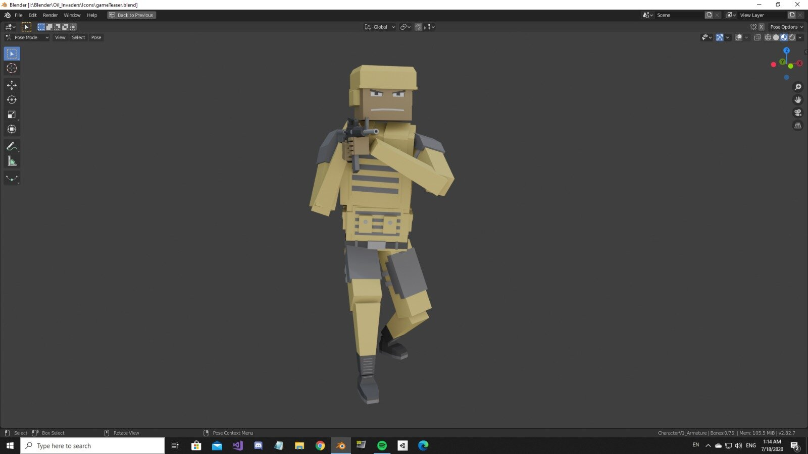
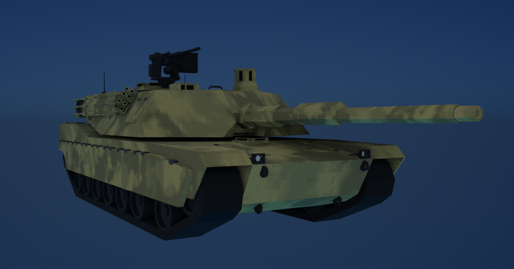
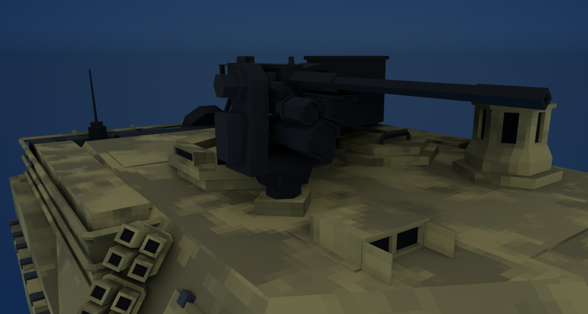
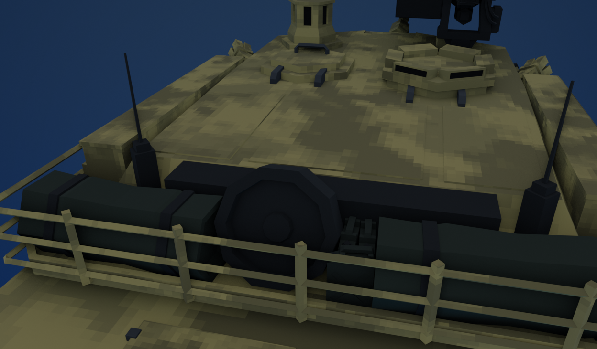
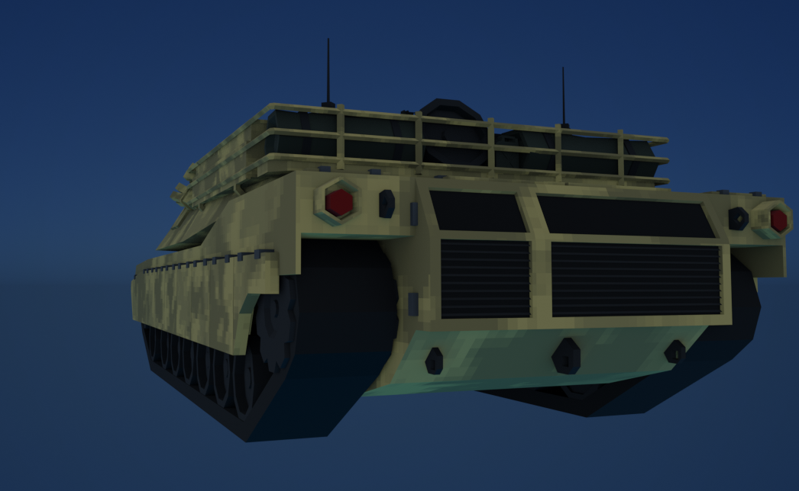
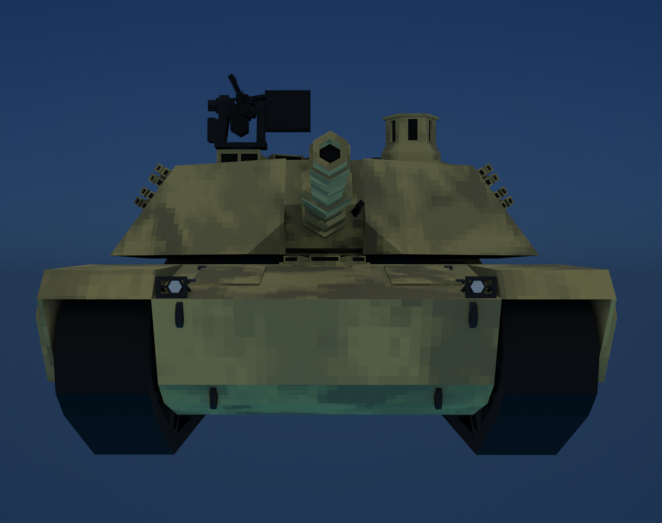
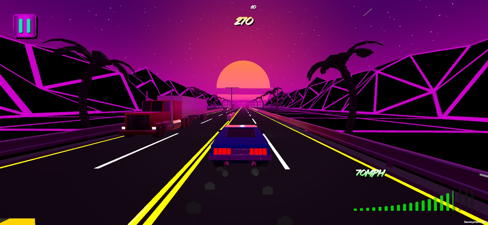

RESULTS & LEARNINGS
Unlike rational people, I thought I wouldn't need to make backups of projects, in any shape or form.
I Had to learn the hard way, since my PC got wiped in 2024 thanks to a Windows update. Roughly five
years of work down the drain. I was able to recover a fraction of my work.
I am happy to say, now I backup and document my work often. Fuck you Microsoft.
GALLERY
UNTITLED MOBILE SHOOTER PROJECT
I was making an unnamed mobile shooter. I thought the mobile market could use a shooter like Battlefield, where there is also military vehicular combat.






RETRO RUNNERS
Mayhem Drive before it was turned into Mayhem Drive. Retro Runners was a casual mobile
runner game. You drive a car down the highway, causing chaos and getting points for it.
Watch out for incoming cars and the authorities, they will try to stop you.
I never finished it, I got about 70% done, before The Great Microsoft Fuckening.
Some assets were salvaged. You may or may not recognize the car here...
